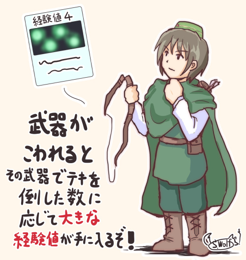

シルバーセカンド開発日誌
■
2018-02-17 (土) 片道勇者2 【14】 1歩戻る▼
ということで今週は雑に決めてしまった仕様のところを
まるっと作り直す作業をしていました。
今もまだその延長で作業中です。
何をやらかしたかというと、ずっとマウス/タッチ前提でゲームを作っていたので
マップ上で敵を選ぶ処理やら射線の処理やら何やら
マップを選択する処理周りのほぼ全てで
キーボード/ゲームパッド対応のことを全く考慮に入れていない処理になっていたため、
それを両対応にできそうな仕様に全修正していたのでした。
ただそれも氷山の一角で、キーボードやゲームパッド対応にするには
工夫が求められる場所がいまだにたくさん残っています。
キーボード/ゲームパッド対応はアルファ段階では実装されないでしょうけれど、
リリース版に向けてジワジワ直していきたいと考えているところです。
また大規模作り直しが発生しないよう、せめてマウス＆キーボード＆ゲームパッドを
両立させられそうな仕様を固めるところまでは今のうちにやっておきたいですね！
ゲーム開発はこういった操作性周りだけでも多大な時間を費やすことになるので、
「マウス/キーボード/ゲームパッド全対応のゲームやっべぇな！」
と痛感させられています。大規模ゲームでさえマウス操作か
キーボード操作のどちらかがやりにくいといったことがたびたびあるので、
うまくやれてるゲームの裏にはとてつもない努力があるんですね。
いよいよ確定申告も始まるので、
次は各種事務作業に追われることになりそうです。
この季節は心身共に調子を崩しがちなので、
季節の変化に適応することにも心を割きつつ、
マイペースに進めていきたいです。■
2018-02-08 (木) 片道勇者2 【13】 カード絵！▼
そろそろカード絵の基本系を決めようと色々試していたのですが、
色々考えた結果、全体的にはこんな雰囲気のカード絵になりそうです。
↓
※カードの下地はまだ仮のものです
こういう形にしようと思った理由は色々あって、
●コストが安い！（最重要）
カードの絵柄は大量のバリエーションを作る必要があるので、
非常に低コストで量産できるものである必要があります。
で、以前、Steamの実績アイコンを作るときに感じたことなのですが、
「区別すること」が主目的である画像なら、
ドット絵で作るのは非常に生産効率が高く、
ちょっとのアレンジを加えた量産もしやすいことが分かりました。
※実績アイコンの例、Steam展開にあたって慌てて50個くらい作りました。
ほとんどは無加工チップでしたが、こんな風に少し加工しても大したコストになりません。
↓
●普通に絵を描くとショボくなりがち！
これは自分の問題なんですが、「低コストで作ってもそこそこ見栄えする」
という絵を量産する技術が私にはありません。
他のインディーのカードゲームでもよく発生しがちな問題ではないかと思うのですが、
外注コストをかけにくいカードゲームでは
アイコン的な絵などで数をカバーする戦略がよくとられます。
ただそうした場合、私のセンスでは見栄えしにくくなるのが難点だと考えていました。
それで、同じコストでもうちょっと見た目を
よくできないかなと考えた結果がこれでした。
すでに存在する画像を加工するならだいぶお手軽です。
●元のゲームがドット絵ベースなのでまあ自然！
幸いにして『片道勇者』シリーズはドット絵ベースのゲームだったので、
カード絵としてドット絵を使うことにはあまり違和感がなさそうでした。
文脈的に自然に取り入れられるのは魅力です。
（実は『片道勇者2』ゲーム内のキャラのほうは、
拡大縮小に耐えるようにするために
なめらか化してたりするんですけれども）
という感じで、ドットでないお絵かきのカード絵は特別なものにだけ作るとして、
基本はドット絵ベースで数を稼いでいく予定です。
【ただいまの開発段階】
ざっくりしたシステム作りがようやく一段落し、
今はアルファ公開に向けてデータを作成し始める段階に入りました。
データ作り、新しいバリエーションを増やす際にシステムをいじる必要があるのですが、
そこは相変わらず危険度マックスの大変な状況です。
特にマップ周り！ ヘクスだったりヘクス間に壁があったりで
従来よりだいぶややこしいので、
そこに関わる処理を一つ追加するたびに
「アッヒィィフヒョー！！」となっています。
相乗効果を楽しみやすいローグライクは、
すでに10の処理があるところに1個を足すと、他の10のところと干渉しないか
チェックしないといけなくて1足すだけで
「1実装＋10チェック」の手間がかかったりするのですが、
これが最終的に100とか200とかになっていずれ手に負えなくなるので、
最終的にはプレイヤーの皆さまのお手や、組み合わせの独創性のお力を
お借りすることになると思います。
発売直後などはいつも通りベータやアーリーアクセス扱いになるでしょう。
他にも仕様的にキーボードとマウスで共存不能な処理が
混ざっていることに気づいたりして
「あああああー！！」といいながら大規模修正したりしています。
リリース直前でなく今の内に気づけるのはまだ幸福なので、
こういった部分は早めに直していきたいですね！■
2018-01-20 (土) 片道勇者2 【12】 ボツになった特徴効果▼【片道勇者2 ボツになった特徴効果】
実はもうボツになった話なんですが、
『片道勇者2』では攻撃力や回避率＋などの「特徴」を「重ねて取った」ときの効果を、
前作から少し工夫しようか、どうしようか、と考えていました。
※特徴：ゲームスタート時のキャラメイク時に取れる追加の特性。
基本的に少し強くなる。

たとえば「攻撃力＋」の2つめを取ると、1つめと同じ効果「攻撃力が１増加」でなく
「攻撃力を成長させやすくなる」という効果を得られるようにする、といった形です。
これにより、一定レベルごとに必ず「攻撃力」を成長させられる選択肢が
出るようにするのはどうかな、と考えていました。
なぜこう考えたかというと、今作は1点分のパラメータの効果がかなり大きいためです。
なので増加分を将来に散らすことで、5つ重ねによる
スタート時のパラメータの「とんでもなさ」を多少緩和できるかなと考えました。
【こうするとどう変わる？】
前作通りだと、「攻撃力＋」を5つ取れば最初に最大5ポイント分、
初期パラメータを増やせる感じになるはずですが、
この形だと、何個「攻撃力＋」を取ってもスタート時には最大+1しか上がらないので
序盤にはさほど影響を与えないようになります。
その一方、「定期的に成長チャンスがめぐってくる」形になるので、性能的には
より長期戦向きになります。
たとえば海賊で「カリスマ（前作の「魅力」に相当）」を2つ積みにして
恒久的にジワジワ「カリスマ」を上げられるようにして
弱点を補うようなプレイが可能になるのです。
……が、ここまで考えてなんだか面白くない気がしたので、
今ではこの案はボツになりました。
理由は以下の2点です。
●弱点を恒久的に補強できるといっても感触が地味な上に、
クラス固有のゲームの面白みを削ぐ可能性がある。
→ せっかく全てのクラスに個性を付けても、弱点を持たない程度に
平均的に調整されてしまう問題が出てしまいます。
たとえば攻撃力を上げた理術士が肉弾戦プレイだけで解決してしまったりするわけで、
全てのクラスでプレイ感がおおよそ似てしまう危険性があるのです。
それは開発側としてはちょっと望まないことでした。
●最初に一個のパラメータをガン上げできる方が「試してる感」があって楽しい！
→ どんなに重ねても1点しか増えないのに比べると、
前作の「筋力＋」5つ積みは高い攻撃力を味わえて爽快でした。
「スタート時から変化が出せる」というのは色々と試す快感を味わいやすくて、
初めての人ほどこの体験が必要だと感じます。
そんなわけで、この「同じ特徴を取ったとき、2つめ以降だと
能力が上がる代わりに成長率だけアップする」という効果は、
ひとまずボツになりました。
【結局どうなった？】
結局、1点分の効果が重いことによる「5つ重ねにしたときのとんでもなさ」は、
「同じ特徴は最大3つまでしか取れない」という制約を設けて
カバーしようかなと考え中です。
こうすれば、仮に私が「取れば取るほど有利になる特徴」を作ってしまったとしても、
5つ中の残り2つに何を入れるか考える余地は生まれるので
完全なる無思考にはなりにくいはずです。

また、前作のデータを確認した限りだと、「特徴」の攻撃力補正バランスは
●クラス「剣士」や「勇者」が「筋力＋」の特徴を5つ重ねにした場合は
攻撃力がだいたい初期値の1.5倍近くになる。（攻撃29→41）
●最弱クラス「観光客」だと「筋力＋」5つ重ねで
攻撃力が初期値の2倍近くになる。（攻撃17→32）
というくらいでした。これに合わせる感じで今作に当てはめるなら、
・攻撃高めのクラスの初期値が攻撃力5点～6点で、
そこに+3すると【1.5倍～1.6倍】になる。
・攻撃最弱クラスの初期値が攻撃力3点で、そこに＋3すると【2倍】になる。
という程度のバランスを狙えば、能力値上昇を＋3アップまでにしても
前作の「5つ重ね」の快感と似た味を引き継ぐことができるのではと考えています。
それでいてあと2つも追加で特徴が取れるようになるので、
選び方が単調になりにくくなる期待もあります！
で、「よし！ とりあえずこれで行くか！」となったのが数日前の出来事です。
……という感じで、こんな風に仕様があっちにいったりこっちに来たりしつつ、
面白みを求めてフラフラしながら今日も開発を続けています。
【アルファ版の目標設定！】
アルファが近くなってきたような気がする今、
新たにアルファ公開に向けての基準を一つ設けることにしました。
それは、
●5周分くらいは遊べる内容にしたものをアルファ1としてリリースする。
です！ つまり、実際に判断を楽しめる程度に少しはデータを揃えておいて、
5回分くらいは楽しく試せる感じにしたところまでを作ってお見せしたいと思います。
というのも、ただの「動作見本」と言えるラインまでは
十分にたどり着いているんですが、
少しやってみてもらったところで「面白くなる？のかな？」
くらいしか感想が出なかったので、
いくらかの新しい面白みや期待感を感じられる程度には
色々実装してからリリースしようと考え直した次第です。
特に、貴重な初回プレイユーザ様を消費するとなったら、
チュートリアルの善し悪しも見られるチャンスなので、
仮でもチュートリアル周りをいくらか充実させておきたいと考えています。
何よりちょっとの面白さの刺激があれば、
「もしかしてこういう案も面白いんじゃね？」という
ご意見をいただける確率もきっと上がるでしょうし、
多くの人にとって「ここすごい嫌いだー！！」という場所も掴めるでしょうから、
今後新たなデータを作っていく上で色々な知見を得られるはずです。
どのみち開発自体はずっと同じペースで続けており、
単に「いつ一回目を見せるか」という問題でしかないので、
せっかくやるなら効果的なタイミングでお見せしたいと思っています。
そんなわけで、今日も今日とてマイペースに『片道勇者2』の開発を続行中です。 ■
2017-12-09 (土) 片道勇者2 【10】 サイフの大きさ▼
まだ本採用するか分からない仮仕様ですが、
開発中の『片道勇者2』ではクラスごとに「すぐ使えるお金」には
限界が設けられています。
サイフの大きさが設定されてると言った方が分かりやすいかもしれません。
新規実装されるかもしれない商人のBタイプ
たとえば現時点のプロトタイプでは、
「剣士」は「3000シルバ」まで持つことができます。
「じゃあ3000シルバ以上の金は持てないの！？」と思われそうですが
実際はそんなことはなく、あふれた場合は所持金の1000シルバ分が
「1000シルバの袋」となってアイテム化されます。
この「1000シルバの袋」は、使えばサイフに戻すことができますし、
お店で売りに出せばもちろん1000シルバ分としてカウントしてくれます。
投げて中ダメージを与えられる、という使い道も用意しようかなと考えています。
ただ、いらないアイテムをたくさん持っていると手札に来るスキルカードが減るため、
その分だけ戦闘力が下がる可能性が出てしまうのが『片道勇者2』というゲーム！
状況次第ではお金を捨てたり投げたりしなければならないこともあるでしょう。
お金が増えすぎたら、「宝石」のような
「1枠で何千シルバ相当にもなるアイテム」を買って圧縮したり、
「アイテム預け機能」を持つ仲間など誰かに一時的に預けたりすることも
作戦の一つになります。
【お金に強い「商人」クラスを実装するかも？】
主人公のクラスとして「お金を持っていそうな職業」を選んだ場合は、
サイフに一度に入るお金の量も多くなる、と差別化しようと考え中です。
たとえば新クラス案の「商人」だと「8000シルバまで持てる」とか、そんな感じですね。
もちろん、「特徴」でサイフを大きくしたりもできるようにする予定です。
今のところは「商人」のクラスをそのまま実装するかは分かりませんけれど、
商人でもない街の住人にムリヤリ売買交渉をしかけたり、
お金でムリヤリ仲間にできたりするといった要素を考えていまして、
新たな詩人ポジションとして面白そうな気がしています。
とはいえ、実際に遊んでみて面白さを損なうだけなら
所持金制限は取っ払う予定でいます
（あるいは特定の日替わりワールドのみの特別ルールとするなど）。
一方、このルールを入れるならお金を大量に与えても平気になる利点があります。
このルールをナシにして前作みたく「ちびちびお金をあげて制限なしにする」か、
今回のルールを入れて
「多くお金がもらえるけどどのくらい保有しておくかは考えどころ」
という感じの2択のバランスになるのではないかなと考えています。
基本的に『片道勇者2』では
「（経験値も技もお金も）小さい資産を過剰に持っていると邪魔になる」
という方向性を意識してまして、「戦闘に勝てる最低限の技の比率」を維持したまま、
資産をどれだけ保有して街を巡るか考えるのも
一つの悩み所になるようにしたいかなと考えています。
もちろん、「マニアックになりすぎてプレイコストが上がりかねない状況」を
なるべく警戒しながら、ですけれどね。
そして余談ですが、この記事でとうとうこの開発日誌は600記事目を迎えました！
1週間に1回書いてるとカウントしても4200日分！
ここまで続けられたのも見てくださっている皆さまのおかげです。
よければ今後とも、よろしくお願いいたします。■
2017-12-02 (土) 片道勇者2 【9】 武器が壊れる利点▼【片道勇者2 武器が壊れる利点】
ずっと『片道勇者2』のアルファを開発中です。
今回は「武器が壊れる利点を付けたい」というお話についてご紹介！

◆武器を使い切ることにも利点を設けたい！
前作では「武器を使い切る」ことには全く利点がなかったのですが、
今作では武器が壊れた時に、それまで敵を倒してきた分に応じて
「大きな経験値」を得られるようにする予定です。
たとえばたくさんの敵を倒した武器が壊れたときは、
経験値4や経験値8といった大きな経験値カードを得ることができます。
敵を倒して得た経験値の何割かが武器に蓄積されていくので、
長く使って敵を多く倒した武器は得られるボーナスも多くなります。
今作では「大きな経験値カード」は非常に有利です。
『片道勇者2』ではカードゲーム風のリソース管理が行われていますが、
前回の記事でも申し上げた通り、通常のレベルアップで一度に使えるのは
「手札にある経験値カード」のみなのです。
たとえば毎アクションに引ける手札が4枚の場合、
「経験値1」のカードだけをどんなにたくさん持ってても、
一回のレベルアップに使えるのは経験値1×4枚で
最大でも「経験値4点まで」となってしまいます。
でもレベルアップカードリストにたまに出てくる「強打」を得るためには
8点の経験値が必要だったりするので、4点では目標には足りません。
でもここで手札に経験値5点や6点のカードが混ざっていれば、
累計8点に達するかもしれません。
そういった状況が多発するこのゲームでは、
「大きい経験値カード」は小さい経験値よりもはるかに大きな価値があります。
そんなわけで今回は、レベルアップするために「武器を使い切る」ことにも
強い動機付けをしていきたいと考えています。
もちろん、とっておきの強化武器を次元倉庫から取り出して冒険に出る楽しみも
前回同様に取り入れたいと考えておりますので、その点はご安心を！
◆無限に使える武器
また、今作では素で「無限に使える武器」をいくらか用意する予定です。
今回は「壊れる武器」に新たな利点が生まれた一方で、
無限に使える武器は「壊れないこと」それ自体がデメリットになりえます。
「壊れたときの大きな経験値を得られるチャンス」が減ってしまうわけですからね。
そうした暗黙のデメリットがあるならば、「無限に使える武器」を持っているときだって
「今は使わずに、『壊れる武器』を先に使って経験値を稼いでおいた方がいいな」
という選択肢が生まれるので、私としても「無限に使える武器」を出しやすくなり、
プレイヤーさんも選ぶ幅ができ、と、作ったり遊んだりする幅が広がりそうです。
（たぶん、最高に効率的なプレイをする限りは「無限に使える武器」を選ぶ意味が
さほどない、という感じのバランス調整を目指すことになるでしょう）
前作だと武器が壊れることには何のメリットもなかったので、
仮に「壊れない武器」があったとしたらプレイヤーさんの選択肢としては
完全にそれ一択になりうる「バランスブレイカー」であり、
直接は実装できなかったのですが、今作は壊れる武器、壊れない武器、
両者にいいところを設けて、共存させられる道を考えていきたいですね。 ■
2017-11-25 (土) 片道勇者2 【8】 LvUPの仕組み[+動画]▼【片道勇者2 レベルアップの仕組み】
『片道勇者2』ではリソースや現在の行動の選択肢が
「カード」として管理されるようになります。
そしてまた、このゲームでは「経験値」でさえも1枚のカードとして入手されるため、
レベルアップの仕組みもちょっと独特です。
このゲームにおいて特に重要となる部分ではないでしょうか。
ということで、まず映像をご覧ください！ これが今のところのレベルアップの流れです。
【戦闘→経験値獲得→レベルアップ までの流れ】（大部分の画像は「仮」のものです）
◆経験値の入手方法
まず経験値の入手についてご説明します。といってもだいたいはいつも通り！
『片道勇者2』では、「敵を倒して一定ターンが経つ」と、
画面の上から「経験値2」なんてカードが出てくるので、
それをクリックすることで「経験値」カードを手札に入れることができます。
【画面の上から経験値カードが出てくる】

そしてここが重要な点！
次の経験値カードが出てくる前に連続して次の敵を倒せれば
「経験値ゲージ」はどんどん伸びていき、
次に出てくるカードが「経験値3」や「経験値4」のように大きくなっていきます。
このゲームでは、「大きな数値」の経験値を持っていることは、
小さい経験値をたくさん持っているよりも強力です。
カードゲームに慣れた方ならすでにお分かりかもしれませんが、
次の項目で詳しく解説していきます。
◆経験値の使い方
手に入れた経験値カードは、いつでも使うことができます。
経験値カードを使うと「レベルアップ画面」が表示され、
【手札】の分の経験値カードを使い、提示されている成長カードから
1つを手に入れて成長することができます。
重ねて言いますが、使える経験値は【手札】にある分だけです！
【レベルアップ画面】

そしてレベルアップ画面で習得可能なカードには、
・ランダムで選ばれたスキルカード2枚
・ランダムで選ばれた能力値アップカード2枚
・大きな経験値を要求する、1回だけ取れる「スペシャルカード」
があります。
スペシャルカードは特定のタイミングで再び取れるようになります。
映像では、「手札枚数＋１」というとても強力そうなカードが用意されていますね。
手札が増えるということはレベルアップしやすさや選択肢の自由度も上がるので、
ぜひとも早めに取りたいカードです。
さて、成長に使える経験値カードは「今の手札にある分だけ」なので、
経験値の溜め方にもテクニックが求められます。
たとえば、一度に引ける初期手札の数は4枚くらいまでなので、
いくら「経験値1」のカードばかりを何十枚集めても
どうがんばっても経験値4点分のものしか買えないのです。
ところがここで「経験値5点」のカードを1枚持っていれば、運次第で
経験値5＋経験値1が3枚＝計8点分の経験値を使えるかもしれません。
この手札に来るカードをどううまく調整するが
「デッキ構築型ゲーム」という方式のゲームの基礎となる楽しみ方で、
状況次第では経験値1点のカードを無駄に使って、
デッキを経験値2点以上の強いカードだけで固めていったりするのも
一つの戦略になります。
さらには、一時的にアイテムでさえどんどん減らして、
山札の「経験値」密度を上げる作戦もあるでしょう。
山札をどう調整して経験値が20（仮）も必要なスペシャルカードを取るか！
『片道勇者2』ではきっとそれが最初の壁になるはずです。
今作では、レベルアップにもある程度のテクニックが求められます。
もちろん初めての人にはそこまで考えなくとも楽しめるようにしたいので、
定期的に自動で大きな経験値カードを獲得できる機会も設けたり、
普通難易度ではスペシャルカードが取れなくてもさほど問題ないようにしたりと、
なるべくマニアックになりすぎないようにしたいと考えています。
それと同時に、学んでいってもらうためのヒントも上手に出していきたいですね。 ■
2017-11-18 (土) 片道勇者2 【7】 新たな体防具▼
ということで今回も『片道勇者2』で変わる新仕様のお話です。
今回は「体防具」のお話！
◆体防具の主な効果は「最大HPの増加」に！
『片道勇者2』では、体防具の一番大きな役割は
「最大HPを増加させること」へと変わります。
一番弱い「旅人の服」でも最大HPを3ポイント（初期HPの15％分くらい）増やせる、
といった具合に、どんな防具でも着けてるだけ
数値的にマシになるようにしようと考えています。
『片道勇者2』では最初の最大HPが20くらいのゲームになり、
ダメージ1点の重みが大きくなるので、
ダメージを直接減らす「装甲」で防具を差別化するのは難しくなります。
といいますか、そもそも『片道勇者』の1でさえ一部の防具を除いて
体防具の防御力を体感できるケースは少なかった気がするんですけれどね！
装甲が増えすぎると「受けるダメージが0になって無敵になってしまう」ので
強すぎず弱すぎずという設定にするのに悩んだ結果が「最大HP増加」でした。
どのみち、「耐えられる回数が増える」という効果は果たしますし、
最大HP10ごとに自然回復量も1アップするという効果も付きます。
（もちろん、強い重鎧には装甲が1点や2点くらい付く場合もあります）
さらに一部の防具は、着けることで特殊な効果や補正を得られたり、
（たぶん）新たなスキルを使えるようになることも！
前回までは防具の存在感がやや地味だったので、
今回は個性豊かな防具を搭載していきたいと考えています。
装甲を上げすぎるとやっぱり無敵になるので、
そこだけは注意したいと思いますけれどもね。
それでも、ガンガンに鍛えた装備を次元倉庫から出せば、
基本最大HP20のところをHP50でスタート、なんてこともできると思います。
『片道勇者』の1に置き換えると、LIFE100スタートだったのが
装備によって250相当で始まるのと同等なので、かなり楽になるはずです。
◆耐久度はどうしよう？
いま、『片道勇者2』の防具に明確な「耐久度」を付けるか
迷っているところです。
もしかしたら耐久度の代わりに「徐々に性能が劣化して、修理すると戻る」
といった具合にするかもしれませんし、
あるいは単純に耐久度を「無限」にするかもしれません。
でも劣化は最大HPが減ったりして成長してる感が薄れそうなのでイマイチそうですね。
というのも、『片道勇者』では普通にプレイしていると、
「攻撃を計100回も受けて防具が壊れる頃には死んでいる」ということが多く、
総耐久度にはそれほど意味がありませんでした。
「ガラスの鎧」などのような一部の
「すごく強力で耐久度が少ない防具」は耐久度が重要だったので、
それだけは何らかの劣化や耐久度を付けるなどといった形で
耐久度の差を付けると思いますが、
普通の体防具は使い放題にしても問題ないかもしれません。
このあたり、いろいろ考え中です。
あと、武器も体防具もどちらも「予備」を持ち歩いていると、
今回のゲームシステムだとかなり邪魔になりそうなので
防具の方だけはもうその場で換装する勢いでいいのかなという考えもあります。
そういったバランスの兼ね合いも考えて、システムを決めていくことになりそうです。■
2017-11-11 (土) 片道勇者2 【6】 新たな盾▼
今回は久しぶりに『片道勇者２』の新システム紹介！
今回のテーマは『盾』です！
『片道勇者』では適した特徴選択をすればかなり強力だった「盾」ですが、
今作は安定性が前回以上になる代わりに、使いこなすコツも求められます。
『片道勇者』では「盾」を装備しているだけで一定確率で自動で効果を発揮しましたが、
一方の『片道勇者2』では、防御効果を出すには「盾」を装備中に
自発的に「盾防御」スキルを使う必要があり、
使えば確実に装甲アップして追加の回避率を得ることができます！
ただし「盾防御」スキルを使うと「行動力を消費」しますので
その分だけ攻撃の回数が減ります。
たとえば、行動力「4」のうち1を使って「盾防御」するといった感じで、
あとの残り3では行動力2を使う剣の攻撃は1回しか行えません。
もし盾で防御しなければ、剣攻撃が2回撃てるわけです。
さらに盾を装備してると手札の1枚が常に「盾防御」スキルで埋まってしまうので、
山札から来るカードの選択肢が1枚少なくなり、
同時に山札の循環も遅くなるというリスクを抱えることになります。
つまり、盾を装備していると手札に
「攻撃」カードが来るチャンスが減る場面も出てくるので、
先手を取って敵を倒していくタイプの職業なら
あえて盾を装備しない方が戦いやすい場面も出てくるわけです。
最初から盾を持ってる「騎士」でも、
攻撃力が欲しい場面では盾を外して戦う方が有利、なんてことも！
高難易度のプレイをするときは、判断しどころが増えるでしょう。
ちなみに盾が有利に働くのは、前回同様に「敵をすぐ倒しきれない場面」です。
つまり１ターンに何度も攻撃を受ける集団戦や、
何ターンも連続して戦う高HPの敵との戦いでは盾は無類の強さを誇ります。
あと、手札の比率が変でうまいことスキルカードが回ってこないときも、
とりあえず耐えるために盾を使えるので初心者の頃は便利です。
「騎士」はレベルアップで「盾修理」（※回数制限あり）のような
スキルも取得可能にしたいと考えています。
今回は前回に増して、「騎士」を防御の達人にしていく予定です。■
2017-09-23 (土) 片道勇者2 【5】 キャラメイク▼【キャラメイク画面作成！】
ただいま『片道勇者2』のキャラメイク画面を作ってます！
なめらかに動く選択肢ウィンドウなどを作ってニヤニヤしているところです。

※画面は開発中のものです。
キャラメイク画面で入力できる内容は、
「名前」「クラス」「特徴」と、前作とほぼ同じとなっております。
（特徴のうち1つは、ストーリーやフラグなどに関わる特別枠にするかもしれません）
ただ前作ではキャラメイク後に選んでいた
「世界の選択」をどの段階に入れるかで迷っていて、
１．『片道勇者』同様にキャラメイク「後」に「世界」を選べるようにする。
２．キャラメイク「前」に「世界」を選べるようにする。
かで悩んでいました。
結局、今のところはリメイク作
「不思議のクロニクル 振リ返リマセン勝ツマデハ」にならって、
「キャラメイク画面で冒険先の世界も指定できる」ようにしてみました。
（画面の右下あたりにありますね）
すごいどうでもいいところかもしれませんが、選ぶ順番一つ取っても悩むんですよ！
普通は世界を選んでそれに適したチューンをして
出撃する方がやりやすい気がするんですが、
実際にそれをやってみると「キャラ状態も分からないのに選べないよ！」みたいに
感じてしまったので、どれを先に選んでもらえばいいのかを
設定するのは本当に悩みます。
結局、今回はマウス操作なので思いついた瞬間にポチッと選べてしまうため、
キャラメイク画面に世界選択も一緒に入れておくことにした次第です。
ちなみに『片道勇者2』は、今のところ
「フルマウス操作」を前提として作成しています。
余裕があったり、うまいインターフェースが思いついたら、
「キーボード」や「ゲームパッド用操作」も実装予定です。
ただキーボードもゲームパッドも、どちらにしても
マウスよりはちょっと操作が面倒臭くなりそうです。
ゲームパッドを入れるなら、アナログスティックも使用可能にしたほうよさそうなので、
『WOLF RPGエディター』の改造も必要でしょうね。
【能力値について】
キャラメイク画面を公開したので主人公の「能力値」についても一緒にご紹介！
まだ完全に固まっていないので今後変わる可能性がありますが、
今回の現状の能力値の種類としては「攻撃力」「理力」「クリティカル率」
「回避率」「知識判定」「カリスマ」「状態耐性」の7つがあります。
（最大HPなどはもうお分かりでしょうから今回はスルーです）
前回は能力を「筋力」「敏捷」などで表現していましたが、
今回はもっと直接的になります。
「何をどのくらい上げれば何ができるか分かりやすくしたい」というのが
前作の開発終了時の私の要望としてあったので、それを取り入れた形です。
各能力値の機能は以下の通りとなります。
【攻撃力】
文字通りダメージの源。ダメージ補正のない中量武器なら
「攻撃力」の50％～100％のダメージを与えられる、など、
物理ダメージはこの値に正比例する。
もしかしたら技を買うときにも消費するかもしれません。
【理力】
フォースの効果はこの数値に比例する。
剣士でもほんの少しくらいはある。
【クリティカル率】
攻撃がクリティカルする確率。
クリティカルすると装甲を引く前のダメージが2倍になる他、
100％超えした分はダメージ4倍のチャンスになります。
（たとえばクリティカル率110％なら確実に2倍、10％の確率で4倍）
【回避率】
敵の攻撃を回避できる確率。
ただこれを上げまくれるとバランス的に危ないことになりそうなので
限界値は低めになると思います。
回避率がなかったら、ピンチのときに「死ぬしかないじゃん……」ってなるので、
「もしかしたら避けるかも！」と思えるくらいには上げられるようにしたいですね。
フォースや火炎攻撃も、元の数値の半分くらいの確率で
避けられるようにするかもしれません。
【知識判定】
鑑定率やミミックの発見率などに影響する予定です。
今回は、付与があまり付いてないアイテムや平凡なアイテムほど、
鑑定成功率が上がり、そうでないのは鑑定が難しくなるようにする予定です。
イマイチなアイテムはすぐ分かるので投げるなり好きに使って、
そうでないレアっぽいのはドキドキしながら鑑定屋に見せてね！ という意図です。
【カリスマ】
前作の「魅力」と同じです。誰かにお願いをしたり、
仲間キャラを加入させたりするときに消費します。
「カリスマ」は完全に、消費すること前提のパラメータとなっています。
今回は、住人や仲間にも細かく「お願い」できるようにして、
「カリスマ」の使い所を用意したいなと考えています。
【状態耐性】
これは新しい要素です。状態異常にかかるまでのゲージが伸びます。
たとえば、「状態耐性」が6なら、毒効果2～5が付く「腐った肉」を1つ食べても平気、
といった感じになります。ただしこの場合でも、複数の「腐った肉」を一気に食べると
ゲージが6以上に溜まって「毒」になってしまいます。
ゲージ12になると毒Lv2になります。
逆に、一つ食べるごとに時間を空ければ、毒の効果を発揮させずに
「腐った肉」を全部食べることができます。
もちろん敵も同じ「状態耐性」ゲージを持っているので、
どんなボスでも一気に何回も状態異常の技をかければ状態異常にかかる予定です。
消費アイテムならほとんどの場合は一発で効くようにするでしょうけれど、
一気に2段階かかるか3段階かかるかの差が出るでしょう。
「混乱のアンプル」を投げたらボスには1段階分しかかからないけど、
ザコ敵なら一気に3段階目の混乱状態になったりする感じです。
「状態耐性」のパラメータを設けた理由ですが、
「プレイヤー側で狙って状態異常に耐えられるようにしたい」のと、
「強い状態異常効果だがかかりにくい『スキル』などを実装したい」
という欲求があったためです。
かかるのが「確率」でなく「溜まる」ようにすれば、受ける側として与える側としても
ある程度「狙う」ことができるようになるはずです。
実際に導入してみてややこしくなりすぎるようならボツにする予定ですが、
前述した「腐った肉」の例にもあるように、少なくとも耐える側としては
状態耐性ゲージがあるほうが考えどころができて楽しそうかなと考えています。
一方、与える側に立つと状態ゲージを溜めるのが面倒臭かったりするかもなので、
敵に使う場合は基本的に確実に一発で効いてもいいかもしれません。
（その場合、「ゲージが溜まりにくいが、
ゲージ一本分に達すれば相手のHPを1/2にする」
という強烈な状態異常はボツになります）
以上が、『片道勇者2』の現状の主人公の能力値です。
ここから増えたり減ったりするかもしれませんが、
ひとまずはこの範囲で作れるアイデアを色々投入してみて、
分かりやすさとの兼ね合いを考えながら調整していこうと考えています。
Copyright © SmokingWOLF / Silver Second
 カテゴリ: 片道勇者2
カテゴリ: 片道勇者2 カテゴリ: 片道勇者2
カテゴリ: 片道勇者2